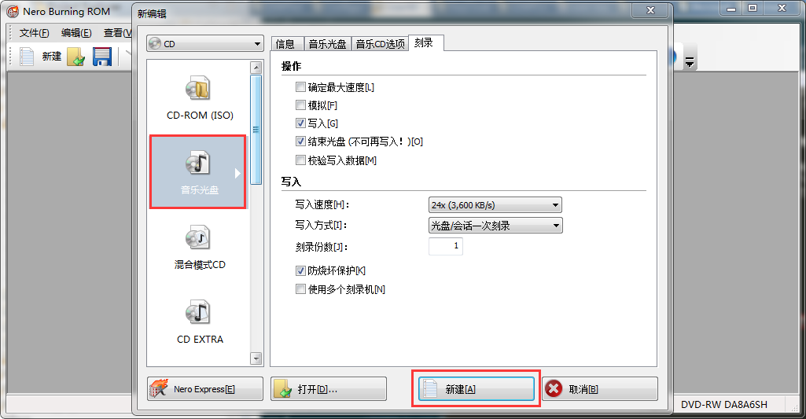
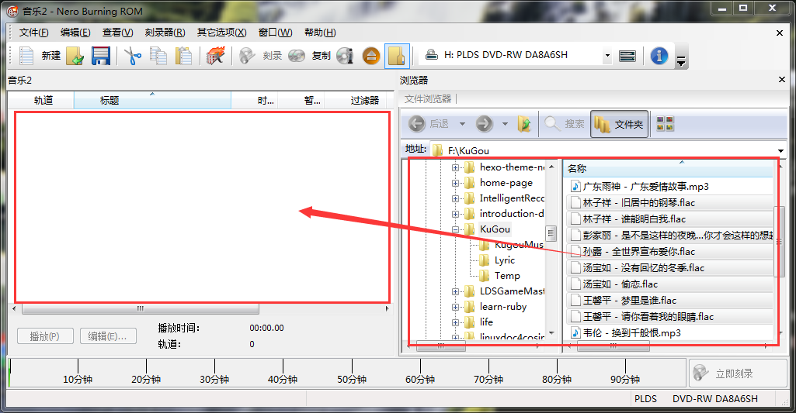
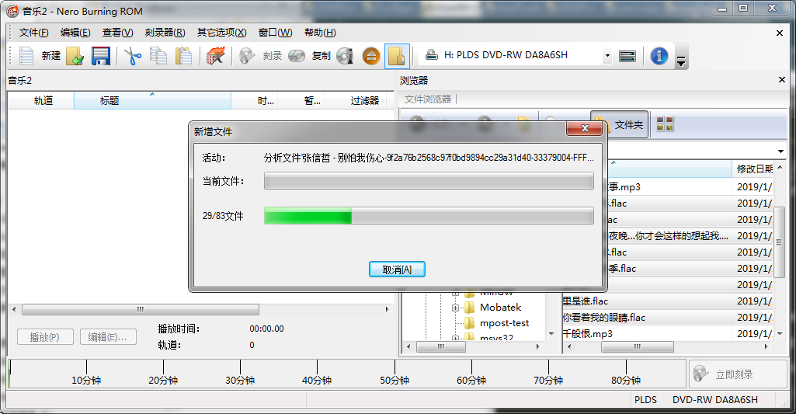
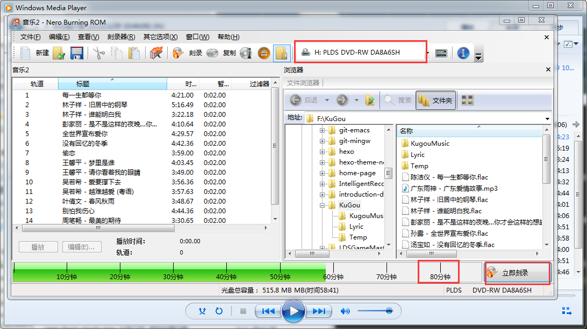
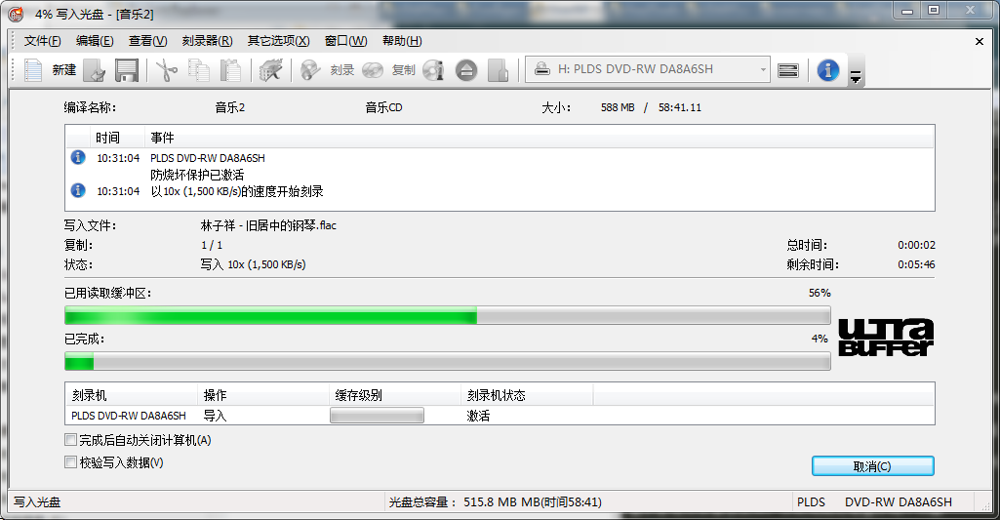
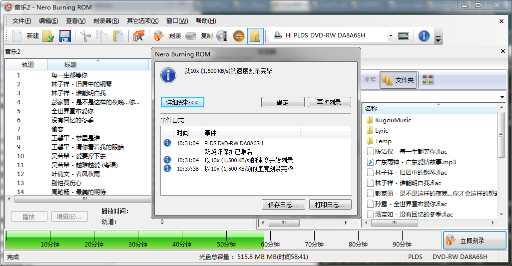
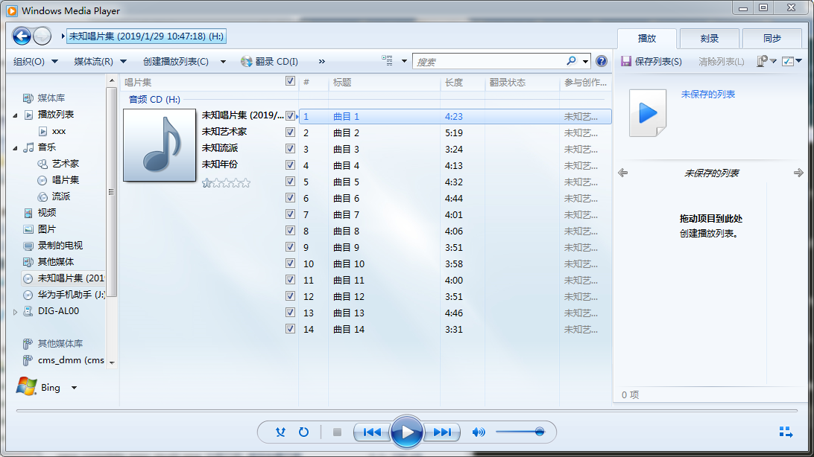

使用无损音乐刻录车载CD碟片之解决方案
1 概述
八代思域的多媒体系统乃车载 CD ，此物虽略显过时，但是音质甚佳，为驾驶带来极佳的听觉盛宴，然需要自行购买碟片实是蛋疼之事，花费且不论，歌曲列表还不能定制，故下载无损音乐自行刻录乃最佳解决之道。
自行刻录 CD 碟片的主要步骤乃:
- 购买音乐
app会员下载无损音乐，如flac、ape等格式. - 准备带刻录功能的光驱，如果没有自带，可以购买
USB外接光驱. - 购买可读写的空白光盘，可反复擦写的空白碟片，非只读光盘.
- 使用刻录软件
nero 10进行刻录.
2 下载无损音乐
日常使用的 mp3 是有损格式，音质效果远逊于无损格式诸如 flac 、 ape 等，一首无损格式的音乐往往在 20-40MB 之间，这其中的差别使用优质音响一听便知。
无损音乐的下载是要收费的， 主流音乐 app 的收费会员都提供无损音乐的下载 ，在下载的时候选择无损格式即可。 会员价格一般在15元/月左右，下载量有限制 ，酷狗每月可以下载300首无损音乐，但是在线听无损无数量限制。
需要注意的是，无损有真无损与假无损之分，从音乐 app 上下载的无损音乐，有少部分乃是假无损，所谓假无损，乃用无损格式包装的有损音乐，如经由 mp3 转换而来的无损音乐，音源本就有损，即使用无损格式编码，音质仍是有损之音质，因此偶尔有音质一般的无损，概因如此。至于辨别方法，本人亦无甚研究。
3 准备带刻录功能的光驱
光驱按能读取光盘的类型，分为 CD/VCD 光驱与 DVD 光驱，一般 DVD 光驱既能读 DVD 光盘，也能读 CD/VCD 光盘，然 CD/VCD 光驱只能读 CD/VCD 光盘，不能读 DVD 光盘。
光驱按读写方式分为只读光驱与读写光驱，读写光驱即是所称的刻录光驱，乃本文之所需者。光盘也分为只读光盘与可读写光盘，只读光盘只能写入一次，在出厂时内容即被固化写入且不能被擦除，而可读写光盘是可以重复擦除写入的，此亦是本文之所需， 即本文需要刻录光驱加可读写光盘 。
目前电脑光驱配置呈淘汰之势，且多数只配备只读光驱 (CD-ROM,DVD-ROM) ，配备刻录光驱 (CD-R,CD-RW,DVD-RW) 的乃少数，幸本人电脑仍然配备刻录光驱，省事不少。 如果没有，可以某宝上购置 USB 外置刻录光驱，价格200大洋左右 。
4 准备空白可读写光盘
光盘分为只读光盘和可写光盘，只读光盘只能写入一次，无法擦除，如 CD-R,DVD-R,BD-ROM 等.可写光盘可以反复写入/擦除，但是光盘的擦写次数并不是无限的，理论上可擦写1000次，但受制于存放环境和磨损等因素，实际擦写次数远达不到此限，但对于日常使用来说，擦写几十上百次是足够的。可读写光盘有 CD-RW,DVD-RW 等.
因为车子搭载的是 CD 机，所以需要购买的是 CD-RW 光盘，容量 700MB.
光盘写入歌曲有两个限制，一是总容量不能超过 700MB，二是歌曲总时长不能超过 80 分钟，实际每张光盘只能写入15首无损音乐. 虽然从容量和时长才看，写入20首也不成问题，但是在制作光盘映射文件时，会多出来一些内容，比如歌曲总大小500MB，但对应的光盘映射文件可能就接近 700MB.
光盘在某宝上有售，三五十大洋便能购得十来片.
5 刻录碟片
万事俱备，只欠东风，主菜上桌。
下载并安装刻录软件 Nero 10 .
准备好无损音乐文件，插入空白光盘，打开 Nero 10 软件，界面如下

选中左边的音乐光盘，然后点击右下方的新建按钮，弹出界面

在右侧找到无损音乐所在文件夹，选中要刻录的15首无损音乐文件，拖动到左边的空白框中，弹出如下界面

显示正在分析音乐文件，分析完成之后显示如下界面

注意下方的音乐文件总时长是否超过 80 分钟，如果超过，需要从左边列表框中逐个移除音乐文件，直到时长不超过 80 分钟，一般15首是不会超过的。
检查上方的光盘选择是否正确，为确定，可以打开本地磁盘界面进行确认.
点击右下角的立即刻录按钮，开始刻录，界面如下

刻录过程中不能取出光盘，大概一分钟左右刻录完成，完成后光盘自动弹出，并且弹出界面:

取出光盘，重新插入光盘，打开 windows 自带音乐播放软件 windows media player ，默认情况会自动打开光盘，界面如下:

如果能看到歌曲列表，且能正常播放，恭喜! 大功告成! 拿到车上， enjoy 之.